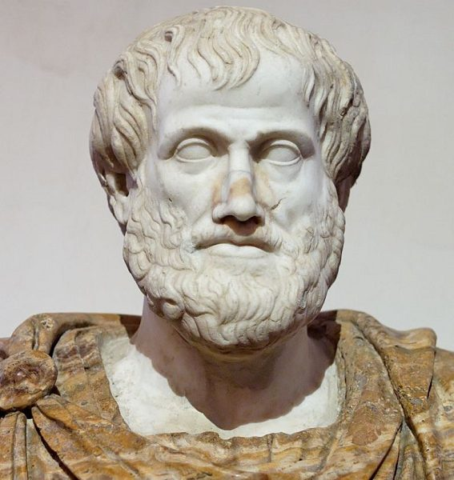

Définition et Principes Fondamentaux
Pourquoi c'est important :
- Nous sommes tous influençables par la parole et l'argumentation
- Comprendre la rhétorique aide à mieux argumenter et à détecter la manipulation
- C'est une compétence essentielle pour le débat démocratique et le débat civil
- La rhétorique peut être utilisée à des fins bonnes ou mauvaises
Points clés :
- Ce n'est pas « juste parler », c'est convaincre stratégiquement
- Elle joue un rôle dans la publicité, la politique, les débats, la persuasion
- Connaître les techniques aide à les reconnaître et s'en défendre

Aristote (384-322 av. J.-C.) a fondé la théorie de la rhétorique, qui reste valide aujourd'hui.
Les Trois Acteurs d'un Échange Rhétorique
Dans toute situation rhétorique, on trouve trois éléments importants :
L'Orateur
Rôle : Celui qui cherche à convaincre.
C'est la personne qui parle, qui présente son argument, qui essaie de vous faire adhérer à son point de vue.
L'Auditoire
Rôle : Celui / Ceux que l'on veut convaincre.
Ce sont les personnes visées par le discours. L'orateur doit adapter son message à son auditoire.
L'Interlocuteur
Rôle : La / Les personnes à qui on s'adresse directement.
C'est la personne à qui on parle dans le moment, celle qui entend directement le message.
Exemple : Un politicien qui fait un discours à la télévision :
- L'orateur : Le politicien
- L'auditoire : Les électeurs (les gens qu'il veut convaincre)
- L'interlocuteur : Le journaliste ou le présentateur face à lui
Les quatre formes de rhétorique
Définition : la personne peut parler, ou diffuser son argumentaire, sans être interrompue.
Exemples :
- Un discours présidentiel
- Une vidéo
- Un article
Avantage pour l'orateur : il présente son argument sans contradiction, d'une manière soigneusement préparée.
Limite : personne ne relève les failles du raisonnement, ni sur le moment, ni devant le même public.
Définition : chacun tente de convaincre l'autre, et peut se laisser convaincre.
Exemple : un couple décide de ce qu'il fait ce soir.
C'est la seule des quatre formes où changer d'avis n'est pas une défaite. Les deux personnes cherchent une décision, pas une victoire.
Définition : l'orateur ne cherche pas à convaincre son interlocuteur, mais le public qui regarde ou qui suit l'échange.
Exemple : un débat présidentiel.
Cela explique beaucoup de choses que l'on trouve absurdes en regardant un débat. Couper la parole, ignorer une question, répéter une formule : ce sont des mauvais coups vis-à-vis de l'interlocuteur, mais ce n'est pas lui la cible. Il n'y a rien à gagner à le convaincre, il ne changera pas d'avis, et le public le sait.
Définition : personne ne cherche à convaincre personne. Il s'agit du simple plaisir de la joute verbale.
Exemples : un débat de famille, un troll sur internet.
Le repérer fait gagner beaucoup de temps. Répondre à un argument dans une situation de conflit, c'est répondre à une question que personne ne pose.
La question qui départage les quatre : qui cherche-t-on à convaincre, et peut-on soi-même être convaincu ?
Exercice sur les quatre formes. Ce qui les distingue n'est pas le nombre de personnes qui parlent, mais la cible : dans le monologue il n'y a pas de contradicteur, dans la délibération on cherche à convaincre l'autre en acceptant de l'être, dans la compétition on parle au public par-dessus l'interlocuteur, et dans le conflit personne ne cherche à convaincre.
Techniques d'Argumentation
Il y a trois manières principales de convaincre.
L'éthos : convaincre par ce que l'on est. Notre statut, notre position, notre voix, notre allure : tout ce qui est en dehors du débat mais qui pèse quand même. Un médecin convainc son patient parce qu'il est médecin, avant même d'avoir argumenté.
L'éthos se dédouble :
- L'éthos personnel repose sur qui parle : son expertise, sa fonction, sa réputation, sa manière de se tenir.
- L'éthos universel ne repose pas sur la personne mais sur les valeurs qu'elle invoque : la Justice, la Foi, la Liberté. L'orateur s'efface derrière quelque chose de plus grand que lui.
Attention : un bel argumentaire peut peiner à convaincre à cause d'un mauvais éthos. Le raisonnement est bon, mais la personne qui le porte ne passe pas. C'est injuste, et c'est ainsi.
Le pathos : convaincre par l'émotion. Par le souvenir, par l'empathie, ou par le chantage affectif. Le son de la voix en fait partie autant que les mots.
Le logos : convaincre par la logique. Le raisonnement mène lui-même à la conclusion.
Exemple de logos, le syllogisme : tous les hommes sont mortels, Socrate est un homme, donc Socrate est mortel. Rien n'est ajouté à la fin : la conclusion était déjà contenue dans les deux premières phrases.
Les trois ensemble, dans une publicité d'assurance :
- Éthos : « depuis 50 ans, nous protégeons les familles »
- Pathos : une famille heureuse qui se sent en sécurité
- Logos : « 20 % moins chère que la concurrence »
Les trois sont légitimes. Aucun n'est en soi une manipulation. Ce qui compte est de savoir lequel est en train d'agir sur nous.
Cinq arguments. Sur quoi chacun s'appuie-t-il pour emporter l'adhésion ?
Exercice éthos, pathos, logos. Cinq arguments à rattacher à leur ressort : ce que l'orateur est ou les valeurs qu'il invoque (éthos), l'émotion qu'il suscite (pathos), ou le raisonnement qui mène lui-même à la conclusion (logos).
À reconnaître et à éviter :
- L'Appel à l'autorité : « Les experts disent que... » (sans vraiment prouver)
- L'Appel aux émotions : Faire peur ou séduire plutôt que de prouver
- L'Appel à la popularité : « Tout le monde le fait » (donc c'est vrai ?)
- L'Homme de paille : Critiquer une version affaiblie de l'argument adverse
- Le Faux dilemme : « C'est soit A, soit B » (alors qu'il y a d'autres options)
Comment se défendre : Reconnaître ces techniques permet de rester critique et de ne pas se faire manipuler.